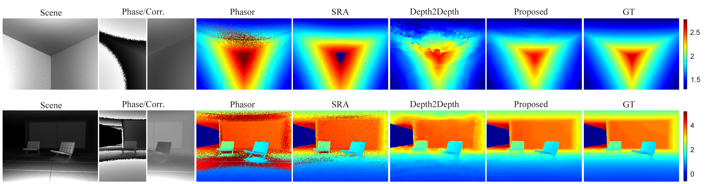

Comparison of our results with competing multipath and phase unwrapping methods (synthetic results).
Abstract
We present an end-to-end image processing framework for
time-of-flight (ToF) cameras. Existing ToF image processing
pipelines consist of a sequence of operations including modulated
exposures, denoising, phase unwrapping and multipath interference
correction. While this cascaded modular design offers several
benefits, such as closed-form solutions and power-efficient
processing, it also suffers from error accumulation and information
loss as each module can only observe the output from its direct
predecessor, resulting in erroneous depth estimates. We depart from a
conventional pipeline model and propose a deep convolutional neural
network architecture that recovers scene depth directly from
dual-frequency, raw ToF correlation measurements. To train this
network, we simulate ToF images for a variety of scenes using a
time-resolved renderer, devise depth-specific losses, and apply
normalization and augmentation strategies to generalize this model
to real captures. We demonstrate that the proposed network can
efficiently exploit the spatio-temporal structures of ToF
frequency measurements, and validate the performance of the joint
multipath removal, denoising and phase unwrapping method on a wide
range of challenging scenes.